目次
GAIA-1: A Generative World Model for Autonomous Driving
Anthony Hu*、Lloyd Russell*、Hudson Yeo*、Zak Murez、George Fedoseev、Alex Kendall、Jamie Shotton、Gianluca Corrado
Wayve（research@wayve.ai）
* 同等の貢献
arXiv:2309.17080v1 [cs.CV]、2023年9月29日
翻訳について：原文 PDF は
36_GAIA_1_2309.17080.pdf（全 25 ページ）。本文、図の説明、図中ラベル、表、脚注、付録を訳出し、論文タイトルと参考文献は原文のまま掲載。図は原図を掲載し、英語ラベルの日本語訳を併記した。数式・数値・引用番号・コードの識別子は原文を維持。原文の記述に関する補足は「訳注」と明示し、本文と区別している。
要旨
自動運転は交通に変革的な改善をもたらすと期待されているが、実世界のシナリオが持つ構造化されていない複雑さの中を安全に走行できるシステムを構築することは、依然として困難である。重要な問題は、世界が変化していく中で、車両の行動に応じて生じうるさまざまな潜在的結果を効果的に予測することにある。
この課題に取り組むため、我々は GAIA-1（「Generative AI for Autonomy」）を提案する。これは動画・テキスト・行動の入力を活用して写実的な運転シナリオを生成し、同時に自車両（ego-vehicle）の挙動とシーンの特徴をきめ細かく制御できる生成的世界モデルである。我々の手法は、入力を離散トークンに写像し、系列中の次のトークンを予測することで、世界モデリングを教師なしの系列モデリング問題として定式化する。本モデルから創発する性質として、高レベルの構造とシーンのダイナミクスの学習、文脈の認識、汎化、そして幾何の理解が挙げられる。将来の事象に対する予期を捉える GAIA-1 の学習済み表現の力と、写実的なサンプルを生成する能力とが組み合わさることで、自律性（autonomy）の分野におけるイノベーションに新たな可能性が開かれ、自動運転技術の学習の高度化と加速が可能になる。
1 はじめに
将来の事象を予測することは、自律システムの基本的かつ極めて重要な側面である。正確な将来予測により、自動運転車は自らの行動を予期・計画でき、道路上の安全性と効率が高まる。これを実現するには、頑健な世界のモデルの開発が不可欠であり［1］、これまでに自動運転向けのそのような予測的世界モデルを構築するための多大な努力がなされてきた［2, 3, 4, 5, 6］。世界モデル［7, 8］は、環境の構造化された表現と理解を学習し、それを運転時の情報に基づく意思決定に活用することができる。
しかし、現在の手法には重大な限界がある。世界モデルは、シミュレーションにおける制御タスク［9, 10, 11, 12, 13］と実世界のロボティクスタスク［14, 15］の両方にうまく適用されてきた。これらの手法はしばしばラベル付きデータに依存するが、それを大規模に得るのは困難であり、またシミュレーションデータで動作するモデルは実世界のシナリオの複雑さを十分に捉えられない可能性がある。さらに、これらのモデルは表現が低次元であるため、将来の事象の非常に写実的なサンプルを生成するのに苦労することがあり、自動運転のような複雑な実世界の応用において予測の高い忠実度を達成するうえで課題となる。
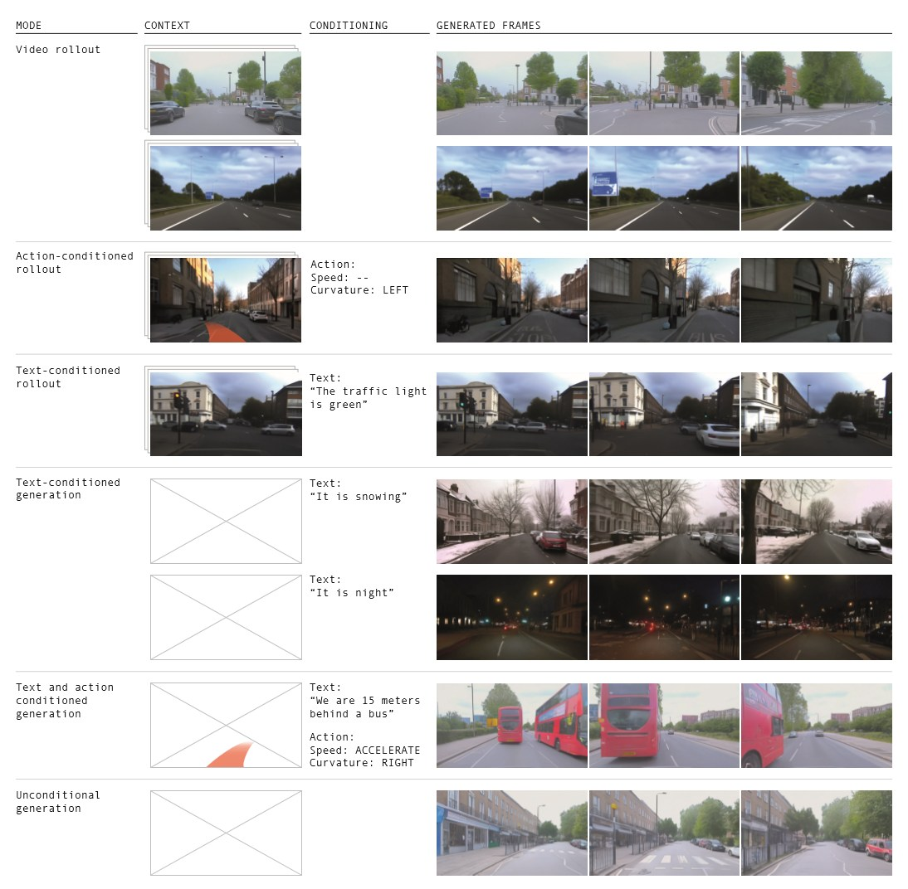
図1：GAIA-1 のマルチモーダル動画生成。GAIA-1 は、動画プロンプトから出発して将来のロールアウトを行うことで動画を生成できる。これらの将来ロールアウトは、自車両の特定の挙動（例：左へ操舵）に影響を与えるために行動で条件付けたり、シーンのある側面に変化をもたらす（信号の色を変える）ためにテキストで条件付けたりすることもできる。速度と曲率については、将来の速度および／または曲率の値の系列を与えることでモデルを条件付ける。本モデルは、テキストプロンプトから、あるいは単に事前分布からサンプルを抽出すること（完全な無条件生成）によっても、写実的な動画を生成できる。
図中ラベル：MODE＝モード、CONTEXT＝コンテキスト、CONDITIONING＝条件付け、GENERATED FRAMES＝生成フレーム、Video rollout＝動画ロールアウト、Action-conditioned rollout＝行動条件付きロールアウト、Text-conditioned rollout＝テキスト条件付きロールアウト、Text-conditioned generation＝テキスト条件付き生成、Text and action conditioned generation＝テキストと行動で条件付けた生成、Unconditional generation＝無条件生成、Action＝行動、Speed＝速度、Curvature＝曲率、LEFT＝左、RIGHT＝右、ACCELERATE＝加速、Text＝テキスト、“The traffic light is green”＝「信号は青である」、“It is snowing”＝「雪が降っている」、“It is night”＝「夜である」、“We are 15 meters behind a bus”＝「我々はバスの 15 メートル後ろにいる」
一方、画像・動画の生成モデルの進歩は、自己教師あり学習の力を活用して大量の実世界データから学習し、驚くほど写実的な動画サンプルを生成するに至っている［16, 17, 18］。しかし、この領域には依然として大きな課題が残っている。それは、予期される将来の事象を捉える表現を学習することの難しさである。このような生成モデルは視覚的に説得力のあるコンテンツの生成には優れているものの、複雑なシナリオにおける精密な将来予測と頑健な意思決定に不可欠な、変化していく世界のダイナミクスの表現を学習する点では不十分な場合がある。
本研究では GAIA-1 を提案する。これは、世界モデルと生成的動画生成の両方の利点を維持することを目標として設計された手法である。GAIA-1 は、生成的動画モデルのスケーラビリティと写実性を、将来への推移について意味のある表現を学習する世界モデルの能力と組み合わせる。GAIA-1 は次のように動作する。まず、モデルを 2 つの構成要素、すなわち世界モデルと動画拡散デコーダに分割する。世界モデルはシーンの高レベルな構成要素とダイナミクスについて推論し、拡散モデルは潜在表現を写実的な細部を持つ高品質な動画へと変換し戻す役割を担う。
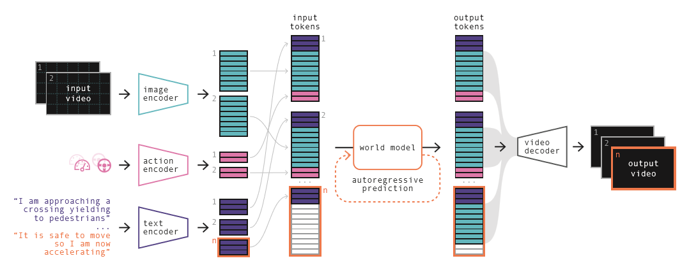
図2：GAIA-1 のアーキテクチャ。まず、すべての入力モダリティ（動画、テキスト、行動）からの情報を共通の表現に符号化する。すなわち、画像・テキスト・行動はトークンの系列として符号化される。世界モデルは自己回帰型トランスフォーマであり、過去の画像・テキスト・行動トークンを条件として次の画像トークンを予測する。最後に、動画デコーダが予測された画像トークンを、より高い時間解像度でピクセル空間へと写像し戻す。
図中ラベル：input video＝入力動画、image encoder＝画像エンコーダ、action encoder＝行動エンコーダ、text encoder＝テキストエンコーダ、input tokens＝入力トークン、world model＝世界モデル、autoregressive prediction＝自己回帰予測、output tokens＝出力トークン、video decoder＝動画デコーダ、output video＝出力動画、“I am approaching a crossing yielding to pedestrians”＝「横断歩道に近づいており、歩行者に道を譲っている」、“It is safe to move so I am now accelerating”＝「進んでも安全なので、今は加速している」
世界モデルでは、動画フレームのベクトル量子化表現を用いて各フレームを離散化し、トークンの系列に変換する。続いて、将来を予測するという課題を、系列中の次のトークンを予測する問題として捉え直す［10, 19］。この手法は近年、大規模言語モデルの学習に広く用いられており［20, 21, 22, 23］、モデルサイズとデータのスケーリングを通じてモデル性能を高めるうえで有効であることが知られている。自己回帰生成によって、世界モデルの潜在空間内でサンプルを生成することが可能である。
2 つ目の構成要素はマルチタスクの動画拡散デコーダであり、世界モデルが自己回帰的に生成した情報から滑らかな動画を生成するために、高解像度の動画レンダリングと時間方向のアップサンプリングを行うことができる。大規模言語モデルと同様に、動画拡散モデルも学習の規模と全体的な性能との間に明確な相関を示しており、GAIA-1 の両構成要素は効果的な複合的スケーリングに適している。
GAIA-1 はマルチモーダルに設計されており、図1 に示したように、動画・テキスト・行動をプロンプトとして用いて、多様で写実的な運転シナリオを生成できる。英国の都市部における実世界の運転データの大規模コーパスで学習することにより、GAIA-1 は、自動車、バス、歩行者、自転車利用者、道路レイアウト、建物、さらには信号機を含む静的・動的要素といった重要な概念を理解し、それらを分離（disentangle）することを学習する。さらに、行動と言語による条件付けを通じて、自車両の挙動とその他のシーン特徴の両方をきめ細かく制御できる。
GAIA-1 は、実世界の生成規則を体現する能力を示す。高レベルの構造の学習、汎化、創造性、文脈の認識といった創発的な性質は、本モデルが世界の規則と振る舞いを理解し再現できることを示している。さらに GAIA-1 は、例えばスピードバンプのような路面の凹凸によって生じるピッチとロールの複雑な相互作用を効果的に捉えるなど、3 次元幾何の理解を示す。また、他のエージェントの反応的な振る舞いを示し、道路利用者の意思決定における因果関係を理解する能力を実証する。驚くべきことに、例えば道路の境界の外を走行するなど、学習データを超えてうまく外挿する能力も示す。例の包括的な一覧は第 7 章を参照されたい。
将来の事象を予測する GAIA-1 の学習済み表現の力は、自車両のダイナミクスとシーン要素の両方に対する制御と組み合わさることで、身体性を持つ知能（embodied intelligence）の向上と、学習・検証を加速するための合成データの提供への道を開く刺激的な進歩となる。GAIA-1 のような世界モデルは、次に何が起こりうるかを予測する能力の基盤であり、これは自動運転における意思決定にとって根本的に重要である。
2 モデル
本章では、GAIA-1 の学習可能な構成要素のモデルアーキテクチャを説明する。全体のアーキテクチャを図2 に示す。
2.1 動画・テキスト・行動の符号化
GAIA-1 は 3 つの異なる入力モダリティ（動画、テキスト、行動）を活用でき、これらは共有の \(d\) 次元空間に符号化される。
画像トークン。動画の各画像フレームは離散トークンとして表現される。これを実現するため、離散化には事前学習済みの画像トークナイザを用いる（事前学習の詳細は 2.2 節を参照）。形式的には、\(T\) 枚の画像の系列 \((\mathbf{x}_1, \ldots, \mathbf{x}_T)\) を考え、この系列の各画像 \(\mathbf{x}_t\) は事前学習済み画像トークナイザによって \(n = 576\) 個の離散トークンに離散化されるとする。これにより \((\mathbf{z}_1, \ldots, \mathbf{z}_T)\) と表される系列が得られ、各 \(\mathbf{z}_t = (z_{t,1}, \ldots, z_{t,n}) \in \mathbb{R}^n\) は \(n = \frac{H}{D} \times \frac{W}{D}\) 個の離散トークンに対応する。ここで \(H\) と \(W\) は入力画像の高さと幅を表し、\(D\) は画像トークナイザのダウンサンプリング係数を表す。これらの離散トークンは、世界モデルと同時に学習される埋め込み層によって \(d\) 次元空間に写像される。
テキストトークン。各時間ステップ \(t\) において、テキストと行動の両方からの情報を取り込む。テキスト入力は事前学習済みの T5-large モデル［24］を用いて符号化され、時間ステップあたり \(m = 32\) 個のテキストトークンとなる。これらのトークンは、世界モデルと併せて学習される線形層によって \(d\) 次元空間に写像される。この処理により、\(\mathbf{c}_t = (\mathbf{c}_{t,1}, \ldots, \mathbf{c}_{t,m}) \in \mathbb{R}^{m \times d}\) と表されるテキスト表現が得られる。
行動トークン。行動については、\(l = 2\) 個のスカラー値（速度と曲率を表す）を考える。各スカラーは、世界モデルと共に学習される線形層によって独立に \(d\) 次元空間に写像される。その結果、時間ステップ \(t\) における行動は \(\mathbf{a}_t = (\mathbf{a}_{t,1}, \ldots, \mathbf{a}_{t,l}) \in \mathbb{R}^{l \times d}\) として表される。
各時間ステップについて、入力トークンはテキスト－画像－行動の順にインターリーブされる。したがって世界モデルの最終的な入力は \((\mathbf{c}_1, \mathbf{z}_1, \mathbf{a}_1, \ldots, \mathbf{c}_T, \mathbf{z}_T, \mathbf{a}_T)\) となる。入力トークンの位置を符号化するために、因数分解された時空間位置埋め込みを用いる。1) 学習可能な時間埋め込みは、ある時間ステップのすべてのトークンで共有される。すなわち \(T\) 個の時間埋め込みがある。2) 学習可能な空間埋め込みは、時間ステップ内でのトークンの位置を示す。すなわち、次元 \(d = 4096\) の空間埋め込みが \(m + n + l = 610\) 個（\(m\) 個のテキストトークン、\(n\) 個の画像トークン、\(l\) 個の行動トークン）ある。
2.2 画像トークナイザ
離散的な入力データを系列モデルでモデル化する場合、系列長と語彙サイズの間にはトレードオフがある。系列長とは、データを記述するのに必要な離散トークンの数を指す。語彙サイズは、1 つのトークンが取りうる値の数に相当する。言語の場合、トークンには文字と単語という 2 つの明らかな選択肢がある。文字レベルのトークンを用いると、入力データの系列長は長くなり、個々のトークンはより小さな語彙に属するが、伝える意味はわずかである。単語レベルのトークンを用いると、入力データの系列長は短くなり、各トークンは多くの意味を含むが、語彙は極めて大きくなる。ほとんどの言語モデル［25, 26, 24, 21, 27, 22］は、文字レベルと単語レベルのトークン化の折衷としてバイトペア符号化（またはそれと同等のもの）を用いている。
動画についても同様に、入力の系列長を短くしたい。その際、語彙はより大きくなってもよいが、トークンは生のピクセルよりも意味的に有意味であるようにしたい。我々はこれを離散画像オートエンコーダ［28］によって実現する。この第 1 段階で達成したい目的は 2 つある。
- 系列モデリング問題を扱いやすくするために、生のピクセルからの情報を圧縮する。画像には冗長でノイズの多い情報が多く含まれている。入力データを記述するのに必要な系列長を短くしたい。
- 高周波信号ではなく、意味情報（セマンティクス）のような有意味な表現へと圧縮を誘導する。その結果得られる世界モデルの入力空間は、構成しやすく、かつ学習過程を大幅に遅くしうる高周波信号に支配されにくいものとなる。
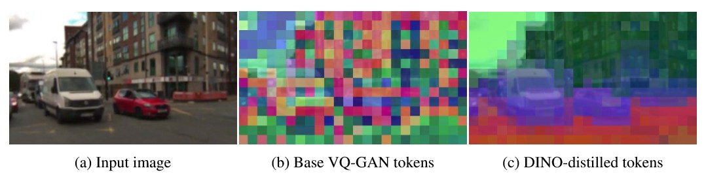
図3：DINO 蒸留による画像トークンの意味的内容の増大。可視化は、トークン埋め込みの上位 3 つの PCA 成分を RGB 値に写像したものを示す。ある意味クラス（例：車両、道路、空）に対応する DINO 蒸留済みトークンは、類似した埋め込みを持つ。
図中ラベル：(a) Input image＝入力画像、(b) Base VQ-GAN tokens＝ベースの VQ-GAN トークン、(c) DINO-distilled tokens＝DINO 蒸留済みトークン
入力データの系列長は、各入力画像を高さ・幅の両方向に係数 \(D = 16\) でダウンサンプリングすることで短くする。サイズ \(H \times W\) の各画像 \(\mathbf{x}_t\) は、語彙サイズ \(K\) の \(n = \frac{H}{D} \times \frac{W}{D}\) 個のトークンで記述される。［29］に着想を得て、意味情報を含むことが知られている自己教師あり画像モデルである事前学習済み DINO モデル［30］の潜在特徴へ回帰させることで、圧縮を有意味な表現へと誘導する。定性的な例については図3 を参照されたい。
離散オートエンコーダは全畳み込みの 2D U-Net［31］である。エンコーダ \(E_\theta\) は、学習可能な埋め込みテーブルからの最近傍探索［28］を用いて画像特徴を量子化し、画像トークン \(\mathbf{z}_t = E_\theta(\mathbf{x}_t)\) を得る。なお、デコーダは画像オートエンコーダの学習にのみ用いられ、最終的な GAIA-1 モデルに含まれるのは離散エンコーダ \(E_\theta\) だけである。デコーダは単一画像で学習されるため、動画へ復号する際には時間的一貫性を欠く。このため、2.4 節で説明する動画デコーダも学習する。
画像オートエンコーダの学習損失は以下のとおりである。
- 画像再構成損失。画像再構成損失は、\(L_1\)、\(L_2\)、知覚損失 \(L_{\text{perceptual}}\)［32］、および GAN 損失 \(L_{\text{GAN}}\)［33］の重み付き和である。
- 量子化損失。埋め込みベクトルを更新するために、［28］の埋め込み損失とコミットメント損失を用いる。語彙の使用率を高めるのに役立つことがわかったため、［34］の埋め込みの線形射影と \(L_2\) 正規化を採用した。
- 帰納バイアス損失。量子化された画像特徴が、事前学習済み DINO［30］モデルの画像特徴とコサイン類似度損失によって一致するよう促す。DINO の情報を学習済みトークンへ蒸留することは、このモデルの帰納バイアスの恩恵をトークンが受けられるようになるため重要である。
2.3 世界モデル
2.1 節で述べたように、世界モデルの入力は \((\mathbf{c}_1, \mathbf{z}_1, \mathbf{a}_1, \ldots, \mathbf{c}_T, \mathbf{z}_T, \mathbf{a}_T)\) である。世界モデルは、この系列入力をモデル化する自己回帰型トランスフォーマネットワークである。その学習目的は、トランスフォーマブロックの注意行列に因果マスクを用いて、過去のすべてのトークンを条件として系列中の次の画像トークンを予測することである［35］。
\[ L_{\text{world model}} = -\sum_{t=1}^{T}\sum_{i=1}^{n} \log p(z_{t,i} \mid \mathbf{z}_{\lt t}, z_{t,j\lt i}, \mathbf{c}_{\leq t}, \mathbf{a}_{\lt t}) \tag{1} \]
学習中に条件付けトークンをランダムにドロップアウトすることで、世界モデルが (i) 無条件生成、(ii) 行動条件付き生成、(iii) テキスト条件付き生成を行えるようにする。
世界モデルの系列長をさらに短くするため、動画を 25Hz から 6.25Hz に時間方向でサブサンプリングする。これにより、扱いきれないほどの系列長に至ることなく、世界モデルがより長い期間にわたって推論できるようになる。フルフレームレートの動画予測を復元するため、2.4 節で説明する動画デコーダを用いて時間方向の超解像を行う。
2.4 動画デコーダ
画像生成［36, 37］および動画生成［16, 18］における近年の進歩に倣い、GAIA-1 のデコーダにはノイズ除去型の動画拡散モデルを用いる。各フレームのトークンを独立にピクセル空間へ復号する素朴な手法では、時間的に一貫しない動画出力となる。この問題を、拡散過程においてフレーム系列をノイズ除去する問題としてモデル化し、モデルが時間をまたいだ情報にアクセスできるようにすることで、出力動画の時間的一貫性は大きく改善される。
我々は［38］に従い、空間注意層と時間注意層を因数分解した 3D U-Net を用いる。学習時には、動画拡散モデルは、事前学習済み画像トークナイザ \(E_\theta\) で入力画像を離散化して得られた画像トークンで条件付けられる。推論時には、拡散モデルは世界モデルから予測された画像トークンで条件付けられる。
我々は単一のモデルを、画像生成タスクと動画生成タスクの両方で同時に学習する。動画での学習はデコーダに時間的一貫性を教え、一方で画像での学習は、条件付け画像トークンから情報を抽出することをモデルに教えるため、個々のフレームの品質にとって極めて重要である［16］。画像で学習する際は時間層を無効にする。
動画拡散デコーダを複数の推論タスク向けに学習するため、特定のフレームや条件付け画像トークンをマスクすることで複数のタスクを実行できる［17］に着想を得た。マルチタスク学習が個々のタスクの性能を改善することが示されている［17］ため、すべてのタスクに対して単一の動画拡散モデルを学習することを選んだ。タスクには、画像生成、動画生成、自己回帰的復号、動画補間が含まれる。各タスクは均等にサンプリングされる。例えば自己回帰生成タスクでは、以前に生成された過去のフレームをコンテキストとして与え、予測したいフレームについては条件付け画像トークンを与える。順方向と逆方向の両方の自己回帰タスクを含める。各タスクの例は図4 を参照されたい。また、各条件付け画像トークンを確率 \(p = 0.15\) でランダムにマスクする条件付けドロップアウトも適用する。これは、モデルが情報をトークンに依存するだけにとどまらず汎化するのを助け、時間的一貫性を改善するためである。
動画デコーダはノイズ予測目的で学習される。より具体的には、［16］でも同様に見出されているように、不自然な色ずれを回避し長期的な一貫性を維持できたため、［39］で提案された \(\mathbf{v}\) パラメータ化を用いる。実際には、\(L_1\) 損失と \(L_2\) 損失の重み付き平均を用いる。動画デコーダの損失 \(L_{\text{video}}\) は次のとおりである。
\[ L_{\text{video}} = \mathbb{E}_{\epsilon, t'}\left[ \left\| \epsilon_\theta(\mathbf{x}^{t'}, t', \mathbf{z}, \mathbf{m}) - \epsilon \right\|_2^2 \right] \tag{2} \]
ここで、
- \(\epsilon_\theta\) はノイズ除去動画モデルである。
- \(\epsilon\) はノイズ除去のターゲットであり、\(\mathbf{v}\) パラメータ化を用いる。
- \(t' \sim U(0,1)\) はサンプリングされた離散拡散時刻である。
- \(\mathbf{x} = (\mathbf{x}_1, \ldots, \mathbf{x}_{T'})\) は長さ \(T'\) の動画系列である。
- \(\mathbf{x}^{t'} = \alpha_{t'}\mathbf{x} + \sigma_{t'}\epsilon\) はノイズを加えた動画を表し、\(\alpha_{t'}\) と \(\sigma_{t'}\) はノイズスケジュールを定義する \(t'\) の関数である。
- \(\mathbf{z} = (\mathbf{z}_1, \ldots, \mathbf{z}_{T'}) = E_\theta(\mathbf{x})\) は条件付け画像トークンの系列である。
- \(\mathbf{m} = (\mathbf{m}_1, \ldots, \mathbf{m}_{T'})\) は、学習タスクによって指定される画像マスクの系列である（図4 を参照）。
3 データ
我々の学習データセットは、2019 年から 2023 年にかけて英国ロンドンで収集された、25Hz で 4,700 時間分の独自の運転データからなる。これはおよそ 4 億 2,000 万（420M）枚の固有の画像に相当する。学習中は、データの分布を制御するために、カスタマイズ可能な特徴の集合についてバランスを取る（図5）。これは、ある特徴の（ビン分割され事前計算された）経験分布に反比例する重みで個々のデータ点をサンプリングすることで実現する。ある事例について、バランスを取る全特徴にわたる同時確率を求め、その事例を含めるか破棄するかを確率的に決定する。バランス調整の強さは、サンプリング重みを累乗する指数によって制御でき、指数 0 では経験分布（バランス調整なし）となり、指数 1 では一様にバランスの取れた分布となる。最終的に得られるバランスと、学習効率のためにサンプルを破棄する度合いとの折衷として、すべての特徴に対して指数 0.5 を用いた。
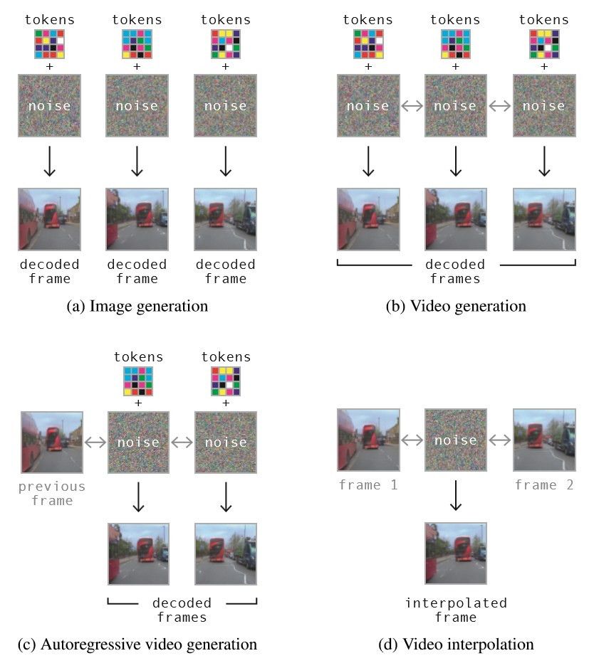
図4：動画デコーダの学習タスク。各タスクは、正解画像とコンテキストトークンをマスクすることで定義される。予測したいフレームには入力としてノイズを与える。予測フレームにはトークンが与えられるが、動画補間タスクだけは例外で、拡散過程は画像コンテキストのみによって誘導される。
図中ラベル：tokens＝トークン、noise＝ノイズ、decoded frame(s)＝復号されたフレーム、previous frame＝前のフレーム、frame 1／frame 2＝フレーム 1／フレーム 2、interpolated frame＝補間されたフレーム、(a) Image generation＝画像生成、(b) Video generation＝動画生成、(c) Autoregressive video generation＝自己回帰的動画生成、(d) Video interpolation＝動画補間
トークナイザについては、地理的要因と視覚的に異なる気象条件を考慮するために（緯度、経度、気象カテゴリ）についてバランスを取り、トークナイザが多様なシーンを十分に表現できるようにした。
世界モデルと動画拡散モデルについては、（緯度、経度、気象カテゴリ、操舵挙動カテゴリ、速度挙動カテゴリ）についてバランスを取り、さらに速度と操舵の挙動も考慮することで、さまざまな挙動のダイナミクスが世界モデルと時間方向デコーダによって捉えられ、十分にモデル化されるようにした。
検証データセットには、学習セットに含まれない走行から得た 400 時間分の運転データが含まれる。検証用に選ばれた走行は、あらかじめ定めたジオフェンスを通過する走行と、ランダムに選択した走行の一部である。さらに、過学習と汎化を監視する方法として、検証セットを、検証用ジオフェンス内に厳密に収まるサンプル（すなわち学習中に一度も見ていない道路）だけを分析するための厳密なジオフェンスと、主要なデータ収集ルート周辺の別のジオフェンス（すなわち学習中に見た道路）とに分割する。
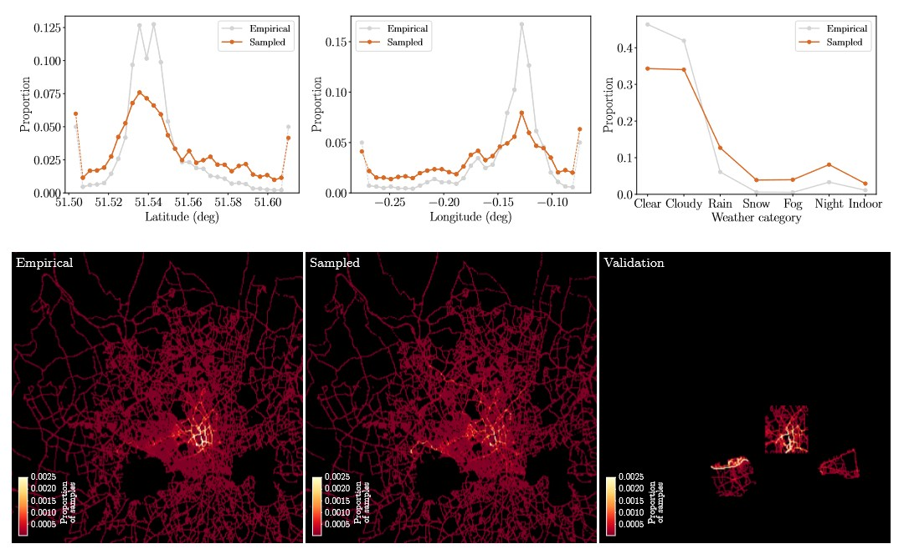
図5：データのサンプリング。上段は、学習中にバランスを取るために選んだ 3 つの特徴（緯度、経度、気象条件）について、経験分布とサンプリング後の分布を示す。破線は、バランス調整を行った範囲外のデータを示す。下段は、学習セット全体、サンプリング後の学習セット、およびジオフェンスで区切った検証セットについて、サンプリングされた緯度・経度座標の地理的ヒートマップを示す。
図中ラベル：Empirical＝経験分布、Sampled＝サンプリング後、Validation＝検証、Proportion＝割合、Latitude (deg)＝緯度（度）、Longitude (deg)＝経度（度）、Weather category＝気象カテゴリ、Clear＝晴れ、Cloudy＝曇り、Rain＝雨、Snow＝雪、Fog＝霧、Night＝夜間、Indoor＝屋内、Proportion of samples＝サンプルの割合
4 学習手順
本章では、GAIA-1 の 3 つの学習可能な構成要素をどのように最適化したかを説明する。ハイパーパラメータの設定、使用したハードウェア、学習時間の詳細を示す。
4.1 画像トークナイザ
画像トークナイザ（0.3B パラメータ）は、解像度 \(H \times W = 288 \times 512\)（9/16 比）の画像で学習した。エンコーダの空間ダウンサンプリングは \(D = 16\) であり、したがって各画像は語彙サイズ \(K = 8192\) の \(n = 18 \times 32 = 576\) 個の離散トークンとして符号化される。ビット圧縮率は \(\frac{288 \times 512 \times 3 \times 8}{18 \times 32 \times 13} \approx 470\) である。
離散オートエンコーダは、AdamW［40］を用い、学習率 \(1 \times 10^{-4}\)、重み減衰 0.01、ベータ係数 \((0.5, 0.9)\) で最適化した。損失の重みは \(\lambda_{L_1} = 0.2\)、\(\lambda_{L_2} = 2.0\)、\(\lambda_{L_{\text{perceptual}}} = 0.1\)、\(\lambda_{L_{\text{GAN}}} = 1.0\)、\(\lambda_{L_{\text{codebook}}} = 1.0\)、\(\lambda_{L_{\text{DINO}}} = 0.1\) である。
モデルは、バッチサイズ 160 で 32 基の A100 80GB GPU に分割して、4 日間で 200k ステップ学習した。5k の線形ウォームアップと、最終学習率 \(1 \times 10^{-5}\) までの 10k のコサイン減衰を用いた。
4.2 世界モデル
世界モデル（6.5B パラメータ）は、6.25 Hz でサイズ \(T = 26\) の動画系列、すなわち 4 秒長の動画で学習した。テキストは時間ステップあたり \(m = 32\) 個のテキストトークンとして、行動は \(l = 2\) 個のトークンとして符号化した。したがって世界モデルの総系列長は \(T \times (m + n + l) = 15860\) である。
世界モデルは、AdamW を用い、学習率 \(1 \times 10^{-4}\)、重み減衰 0.1、ベータ係数 \((0.9, 0.95)\)、ノルム勾配クリッピング 1.0 で最適化した。学習事例は、無条件、行動条件付き、テキスト条件付きのいずれかとした。これらの各条件付けモードの比率は 20%/40%/40% とした。
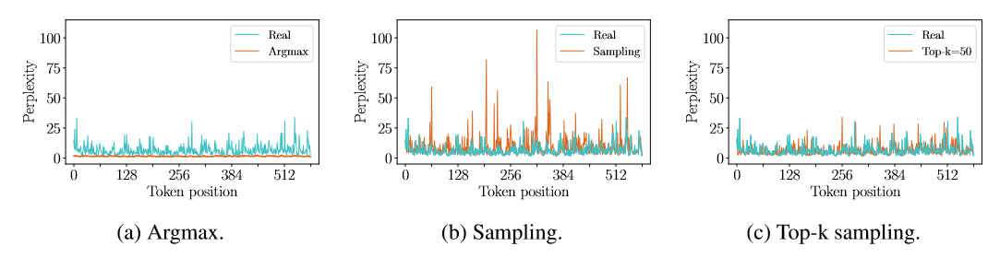
図6：生成トークンの位置の関数としての世界モデルのパープレキシティ。単一画像フレームの \(n = 576\) 個のトークンを考える。実画像のトークンのパープレキシティを、次の戦略で生成したトークンのパープレキシティと比較する：argmax、サンプリング、top-k。(a) では、実画像のパープレキシティを調べると、低い値と高い値の間を振動していることがわかる。これは、それらのトークンに十分な多様性があることを意味する。対照的に、argmax 戦略を見ると、パープレキシティは極めて低い値しか取らない（多様性がなく、予測フレームが同じものを繰り返すという形で現れる）。逆に (b) で、分布全体からサンプリングすると、信頼できない裾からサンプリングするために、一部のトークンのパープレキシティが極めて高い値を取りうる。(c) では、top-k=50 サンプリングが、実トークンと類似したパープレキシティ分布を持つトークンを生成することが観察される。
図中ラベル：Perplexity＝パープレキシティ、Token position＝トークン位置、Real＝実画像、Argmax＝argmax、Sampling＝サンプリング、Top-k=50＝top-k=50、(a) Argmax.＝(a) argmax、(b) Sampling.＝(b) サンプリング、(c) Top-k sampling.＝(c) top-k サンプリング
モデルは 15 日間で 100k ステップ学習し、2.5k の線形ウォームアップと、学習の過程で学習率を 1/10 に下げる 97.5k のコサイン減衰を用いた。バッチサイズは 128 で、64 基の A100 80GB GPU に分割した。トランスフォーマモジュールには、メモリ使用量と推論速度の両面で大きな利点があったため、FlashAttention v2 の実装［41］を用いた。分散学習を最適化するため、活性化チェックポイントを伴う Deepspeed ZeRO-2 学習戦略［42］を用いた。
4.3 動画デコーダ
動画デコーダ（2.6B）は、データセットから 6.25 Hz、12.5 Hz、25 Hz のいずれかでサンプリングした、解像度 \(H \times W = 288 \times 512\) の \(T' = 7\) 枚の画像の系列で学習した。学習タスク（図4）は等確率でサンプリングした。コサイン \(\beta\) ノイズスケジュール［43］を用いた。
動画デコーダは、AdamW を用い、学習率 \(5 \times 10^{-5}\)、重み減衰 0.01、ベータ係数 \((0.9, 0.99)\)、ノルム勾配クリッピング 1.0 で最適化した。モデルは 15 日間で 300k ステップ学習し、2.5k の線形ウォームアップと、最終学習率 \(1 \times 10^{-6}\) までの 5k のコサイン減衰を用いた。重み \(\lambda_{L_1} = 0.1\) と \(\lambda_{L_2} = 1.0\) で \(L_1\) 損失と \(L_2\) 損失の重み付き平均を用いた。バッチサイズは 64 で、32 基の A100 80GB GPU に分割した。パラメータには減衰率 0.999 の指数移動平均を用いた。学習戦略は同じく活性化チェックポイントを伴う Deepspeed ZeRO-2 とした。
5 推論
本章では、世界モデルと動画デコーダの推論手順をより詳細に説明する。
5.1 世界モデル
サンプリング。世界モデルは、それまでのテキスト・画像・行動トークンを条件として、次の画像トークンを自己回帰的に予測する。過去のトークンが与えられると、新しい画像フレームを 1 枚生成するために \(n\) 回の順伝播ステップを行う。各ステップでは、系列中の次のトークンを選ぶために、予測されたロジットからトークンをサンプリングしなければならない。経験的に、言語モデル［44］と同様に、最大化に基づくサンプリング（すなわち argmax）では反復的なループに陥った将来が生成されることを観察した。逆に、単にロジットからサンプリングすると、選ばれたトークンが確率分布の信頼できない裾から来る可能性があり、モデルを分布外へと追いやってしまう。図6 を参照されたい。
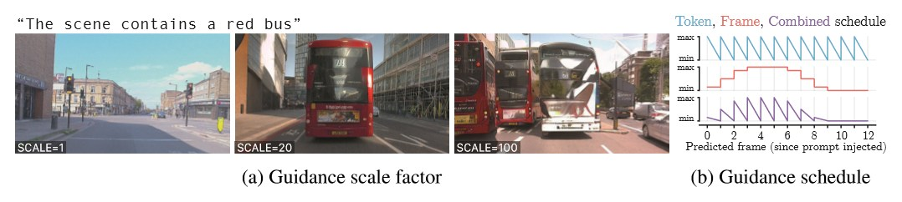
図7：分類器不要ガイダンス。(a) ガイダンスのスケール係数。(b) ガイダンスのスケジュール。
図中ラベル：“The scene contains a red bus”＝「シーンには赤いバスが含まれている」、SCALE＝スケール、Token, Frame, Combined schedule＝トークン、フレーム、組み合わせのスケジュール、Predicted frame (since prompt injected)＝予測フレーム（プロンプト投入以降）、(a) Guidance scale factor＝ガイダンスのスケール係数、(b) Guidance schedule＝ガイダンスのスケジュール
多様性と写実性の両方を促すため、top-k サンプリングを用いて、最も確率の高い上位 k 個の候補から次の画像トークンをサンプリングする。k の値は、画像フレームを構成するトークンの数と、事前学習済みのコードブック（語彙）のサイズの関数として選ぶ。
我々の世界モデルは、開始コンテキストが与えられたときに起こりうる将来をロールアウトするのに使えるだけでなく、開始コンテキストなしでゼロから将来を生成することもできる。長い動画の生成では、動画の長さが世界モデルのコンテキスト長を超える場合、スライディングウィンドウを用いる。
テキスト条件付け。動画予測は、テキストによってプロンプトを与え、それにより方向付けることができる。学習時には、オンラインのナレーションまたはオフラインのメタデータのいずれかに由来するテキストで動画系列を条件付ける。これらのテキストソースは不完全であるため、生成された将来とテキストプロンプトとの整合性を高めるために、推論時に分類器不要ガイダンス（classifier-free guidance）［45, 46］を用いる。ガイダンスの効果は、起こりうるサンプルの多様性を減らすことでテキストと画像の整合性を高めることである。より正確には、予測する次の各トークンについて、テキストで条件付けたロジットと、条件付けなし（無条件）のロジットを計算する。推論時には、無条件のロジットとテキスト条件付きロジットの差をスケール係数で増幅し、サンプリングに用いる最終的なロジットを得ることができる。
\[ l_{\text{final}} = (1+t)\, l_{\text{conditioned}} - t\, l_{\text{unconditioned}} \tag{3} \]
無条件のロジットを別のテキストプロンプトで条件付けたロジットに置き換えることで、「ネガティブ」プロンプティング［47］を行うことができる。ロジットをネガティブプロンプトから遠ざけ、ポジティブプロンプトへと近づけることで、将来のトークンが「ポジティブ」プロンプトの特徴を含み、「ネガティブ」プロンプトの特徴を取り除くよう促される。
ガイダンスに用いるスケール係数を、トークンにわたってもフレームにわたってもスケジューリングすることが重要であることがわかった。トークンにわたるスケジューリングにより、一部のトークンは高いガイダンスで（したがってプロンプトに強く従うように）、他のトークンは低いガイダンスで（したがってサンプルの多様性を高めるように）サンプリングできる。フレームにわたるスケジューリングにより、それ以前のフレームからの遷移を制御するとともに、後続の連続フレームにわたってガイダンスが累積するのを緩和できる。図7 では、12 フレームにわたるガイダンススケジュールの例を示す。典型的には、トークンにわたって線形に減少するガイダンスでトークンをサンプリングするスケジュールを用い、将来のフレームにわたっては、初期のプラトー（平坦部）を設けるか否かにかかわらず、コサイン減衰でガイダンスを下げた。ガイダンスのスケールとスケジュールは、個々のユースケースに合わせて調整すべきハイパーパラメータであることに注意されたい。
5.2 動画デコーダ
世界モデルが生成したトークン系列を復号するために、次の動画復号手法を用いる。
- 対応する \(T'\) 個の画像トークンを条件として、最初の \(T' = 7\) フレームを復号する。
- 2 枚の過去の重複フレームを画像コンテキストとし、続く \(T' - 2\) 個の画像トークンを用いて、次の \(T' - 2\) フレームを自己回帰的に復号する。
- 6.25 Hz で \(N\) フレームが生成されるまで、自己回帰処理を繰り返す。
- \(N\) フレームを 6.25 Hz から 12.5 Hz へ時間方向にアップサンプリングする。
- \(2N - 1\) フレームを 12.5 Hz から 25.0 Hz へ時間方向にアップサンプリングする。
50 拡散ステップの DDIM サンプラ［48］を用いる。自己回帰的復号の際には、生成動画にトークンの情報内容を反映させることと、時間的一貫性との間にトレードオフが見られる。これら 2 つの目的のバランスを取るため、2 つのタスクの重み付き平均を計算する［18］。
\[ \tilde{\epsilon}_\theta(\mathbf{x}^{t'}, t', \mathbf{z}, \mathbf{m}) = w \cdot \epsilon^{\pi}_\theta(\mathbf{x}^{t'}, t', \mathbf{z}, \mathbf{m}) + (1-w) \cdot \epsilon_\theta(\mathbf{x}^{t'}, t', \mathbf{z}, \mathbf{m}) \tag{4} \]
ここで関数 \(\epsilon^{\pi}_\theta(\mathbf{x}^{t'}, t', \mathbf{z}, \mathbf{m})\) は各フレームを画像として個別にノイズ除去し、関数 \(\epsilon_\theta(\mathbf{x}^{t'}, t', \mathbf{z}, \mathbf{m})\) はフレーム系列を動画として同時にノイズ除去する。実際には、単に時間層のオン・オフを切り替える。この重み付き平均を、各拡散ステップにおいて確率 \(p = 0.25\)、重み \(w = 0.5\) でランダムに適用する。
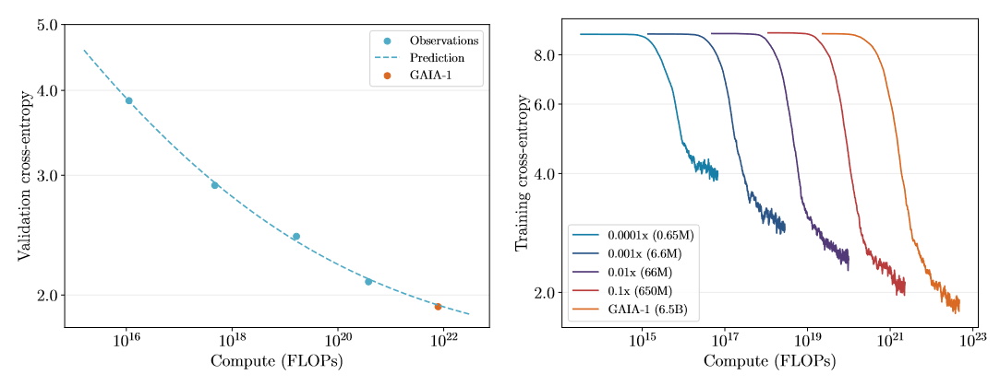
(a) GAIA-1 世界モデルの最終性能は、20 分の 1 未満の計算量で学習したより小さなモデルによって予測できた。(b) 最大で 10,000 分の 1 の小さな世界モデルまでの学習損失曲線。学習損失曲線の平滑化には指数移動平均を用いた。
図8：世界モデルの検証クロスエントロピーと学習クロスエントロピー。
図中ラベル：Validation cross-entropy＝検証クロスエントロピー、Training cross-entropy＝学習クロスエントロピー、Compute (FLOPs)＝計算量（FLOPs）、Observations＝観測値、Prediction＝予測
動画復号のためのさまざまな推論手法を検討する中で、系列の末尾から始めて逆方向に自己回帰的に動画フレームを復号すると、物体がより安定し、地平線付近のちらつきが少なくなることがわかった。そこで、我々の動画復号手法全体では、最後の \(T'\) フレームを復号し、そこから残りのフレームを逆方向に自己回帰的に復号する。
6 スケーリング
GAIA-1 における世界モデリングタスクの定式化は、大規模言語モデル（LLM）でよく用いられる手法と共通点を持つ。どちらの場合も、タスクは次のトークンの予測に焦点を当てるよう簡素化されている。この手法は LLM に見られる従来の言語タスクではなく GAIA-1 では世界モデリング向けに適応されているが、LLM で観察されるものと類似したスケーリング則［49, 21, 27］が GAIA-1 にも当てはまることを観察できるのは興味深い。これは、自動運転を含む多様な領域にわたって、現代の AI モデルにおけるスケーリング原理がより広く適用可能であることを示唆している。
GAIA-1 でスケーリング則を調べるため、20 分の 1 未満の計算量で学習したモデルを用いて世界モデルの最終性能を予測した。これらのモデルを、ジオフェンスで区切った保留（held-out）検証セットでクロスエントロピーを測定することで評価した。そして \(f(x) = c + (x/a)^b\) の形のべき乗則をデータ点に当てはめた。図8a から、GAIA-1 の最終的なクロスエントロピーを高い精度で予測できたことがわかる。
べき乗則の当てはめに用いたモデルは、図8b に可視化したように、パラメータ数の点で 10,000 分の 1 から 10 分の 1 の小さなモデル（0.65M から 650M）にわたる。［49］と同様に、計算量はパラメータ数の関数として推定した。計算量を \(C\)、パラメータ数（埋め込み層を除く）を \(N\) と表すと、単一トークンの順伝播・逆伝播 1 回あたりの浮動小数点演算数は \(C = 6N\) で与えられる。総計算量を得るには、この値に学習トークン数を掛ける。
我々の外挿から、データと計算資源の両方を拡大することで、さらなる改善の大きな可能性があるという結論が導かれることは注目に値する。
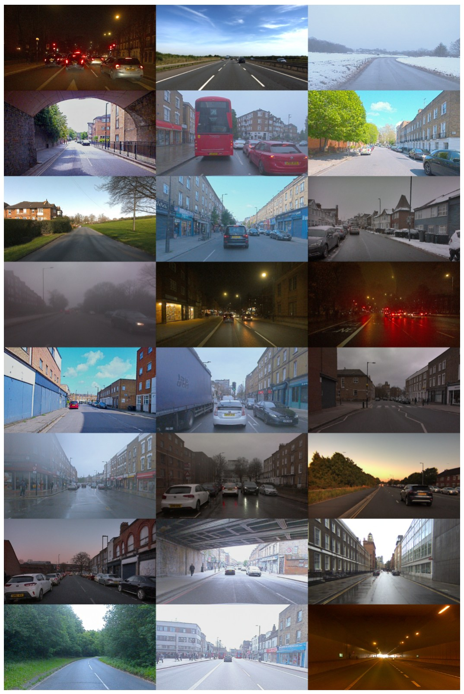
図9：GAIA-1 によって生成された画像。生成された運転シーンの多様性を示している。
7 能力と創発的性質
本章では、一連の定性的な例を通じて GAIA-1 の能力と創発的性質を示す。動画例の包括的な一覧はこちらで見ることができる。図9 は、本モデルが生成できるシナリオの多様さを示している。本章の残りで示す例が裏付けるように、GAIA-1 は、以下の創発的性質を通じて、世界の生成規則をあるレベルで理解し要約していることを示す。
- 高レベルの構造とシーンダイナミクスの学習：もっともらしい位置に物体が配置され、信号機、交通規則、譲り合いなど、写実的な物体間の相互作用を示す一貫したシーンを生成する。これは、モデルが単に統計的パターンを記憶しているのではなく、世界における物体の配置と振る舞いを支配する根底の規則を理解していることを示唆している（7.1 節を参照）。
- 汎化と創造性：学習セット中の特定の事例を超えた、新規で多様な動画を生成できる。学習データに明示的には存在しなかった物体・動き・シーンの独自の組み合わせを生み出すことができ、顕著な外挿能力を示す。これはある程度の汎化と創造性を示しており、動画系列を支配する根底の生成規則の理解を示唆している（7.2 節を参照）。
- 文脈の認識：GAIA-1 は文脈情報を捉え、その理解を反映した動画を生成できる。例えば、初期条件や与えられたコンテキストに基づいて、動画中で一貫した行動と反応を生成できる。さらに GAIA-1 は 3 次元幾何の理解を示し、路面の凹凸（例：スピードバンプ）によって生じるピッチとロールの複雑な相互作用を効果的に捉える。この文脈の認識は、モデルが単に統計的パターンを再現しているのではなく、適切な動画系列を生成するために与えられた情報を能動的に処理し要約していることを示唆している（7.3 節を参照）。
7.1 長い運転シナリオの生成
GAIA-1 は、完全に想像のみから、安定した長い動画（数分）を生成できる（図10）。そのために、モデルは学習した世界の暗黙的な事前分布を活用し、複雑な道路レイアウト、建物、自動車、歩行者などを伴う、完全に想像された写実的な運転シナリオを生成する。これは、GAIA-1 が我々の住む世界を支える規則、およびその構造とダイナミクスを理解していることの実証である。
7.2 複数のもっともらしい将来の生成
GAIA-1 は、単一の初期プロンプトに基づいて、多様で異なる将来シナリオを生成する能力を持つ。短い動画をコンテキストとして与えると、サンプリングを繰り返すことで、もっともらしく多様な結果を数多く生成できる。GAIA-1 は、動画中で観察された初期条件との一貫性を保ちながら、動画プロンプトに応じた複数の潜在的な将来シナリオを正確にモデル化する。図11 に見られるように、世界モデルは (i) 道路利用者との動的な相互作用（例：道を譲る、または譲らない）、(ii) マルチモーダルな自車両の挙動（例：ラウンドアバウトで直進する、または曲がる）、(iii) マルチモーダルな動的シーン（例：変動する交通密度や、歩行者・自転車利用者・オートバイ利用者・車両といった道路利用者の種類）および静的シーン（例：道路レイアウト、建物、植生）について推論できる。
7.3 自車両の挙動と運転シーンのきめ細かな制御
GAIA-1 は、テキストプロンプトのみから、シーンを完全に想像して動画を生成できる。これを実証するため、図12 では、特定の天候や照明条件へとモデルを誘導するテキストプロンプトから運転シナリオを生成できることを示す。
次に、モデルが動画中の車両ダイナミクスに対してきめ細かな制御を示す説得力のある例を提示する。この制御を活用することで、学習データの範囲外にあるシナリオを描写する動画を生成するようモデルにプロンプトを与えることができる。これは、GAIA-1 が自車両のダイナミクスを周囲の環境から分離し、見慣れないシナリオへと効果的に汎化できることを示している。これにより、我々の行動が環境に与える影響について明示的に推論する能力（安全性）が得られ、動的なシーンのより豊かな理解（知能）が可能になり、モデルベースの方策学習（世界モデル内での計画）が実現し、（世界モデルをニューラルシミュレータとみなすことで）閉ループでの探索が可能になる。これを示すため、自車両が左または右に操舵して車線から逸脱する将来を GAIA-1 に生成させる（図13）。GAIA-1 は、学習に用いた熟練者の運転データセットの中で、このような誤った挙動を一度も見ていないはずであり、これは学習データ中でそれまで見たことのない運転の概念を外挿できることを示している。また、自車両の制御された挙動に対する他のエージェントの写実的な反応も見られる。
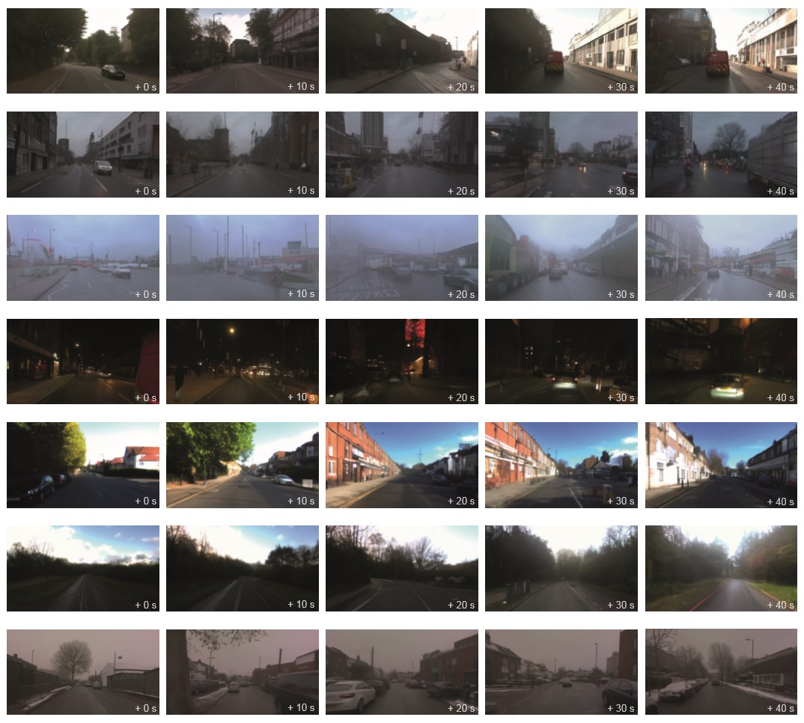
図10：世界モデルによって完全に想像のみから生成された、長く多様な運転シナリオ。
最後に、GAIA-1 がテキストと行動の両方を活用して運転シナリオを完全に想像する能力を実証する。この特定の事例では、自車両の前方にバスを生成するようモデルにプロンプトを与え、その後、バスを追い越すように自車両の行動を強制する（図1 を参照）。
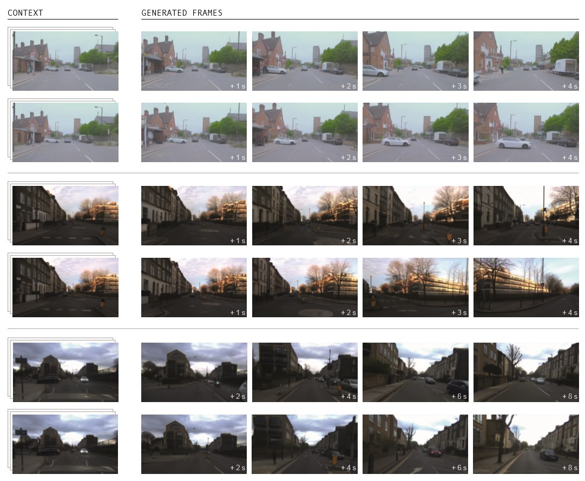
図11：与えられた動画コンテキストから世界モデルが予測した、複数のもっともらしい将来の例。1) 白い車両と自車両との間で、道を譲り合う複雑な相互作用が観察される。1 つ目の将来では、白い車両が後退して自車両に道を譲る。2 つ目の将来ではその逆が起こり、自車両が減速して白い車両に道を譲る。2) ラウンドアバウトで直進するか右折するかという、2 つのもっともらしい自車両の挙動が見られる。3) モデルは、交通量の異なる 2 つの将来を予測している。
図中ラベル：CONTEXT＝コンテキスト、GENERATED FRAMES＝生成フレーム
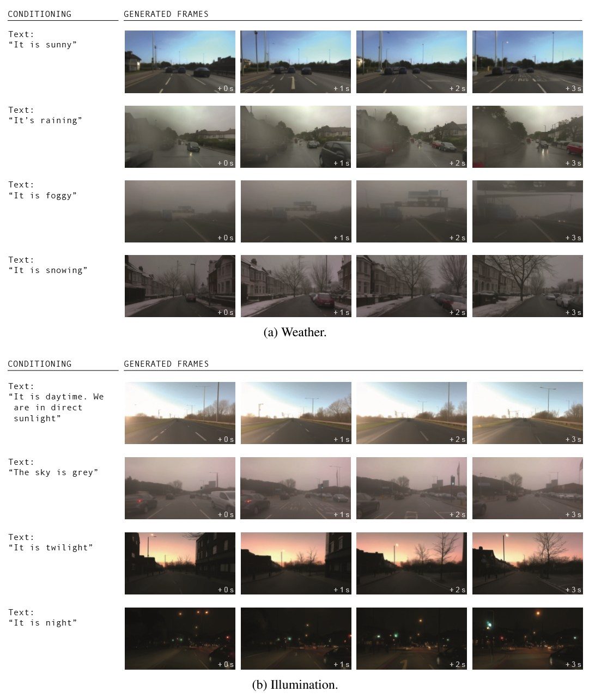
図12：テキストプロンプトからの生成。世界モデルが天候や照明といったさまざまな概念を学習したことを示している。(a) 天候。(b) 照明。
図中ラベル：CONDITIONING＝条件付け、GENERATED FRAMES＝生成フレーム、Text＝テキスト、“It is sunny”＝「晴れている」、“It’s raining”＝「雨が降っている」、“It is foggy”＝「霧が出ている」、“It is snowing”＝「雪が降っている」、(a) Weather.＝(a) 天候、“It is daytime. We are in direct sunlight”＝「昼間である。直射日光の下にいる」、“The sky is grey”＝「空は灰色である」、“It is twilight”＝「薄暮である」、“It is night”＝「夜である」、(b) Illumination.＝(b) 照明
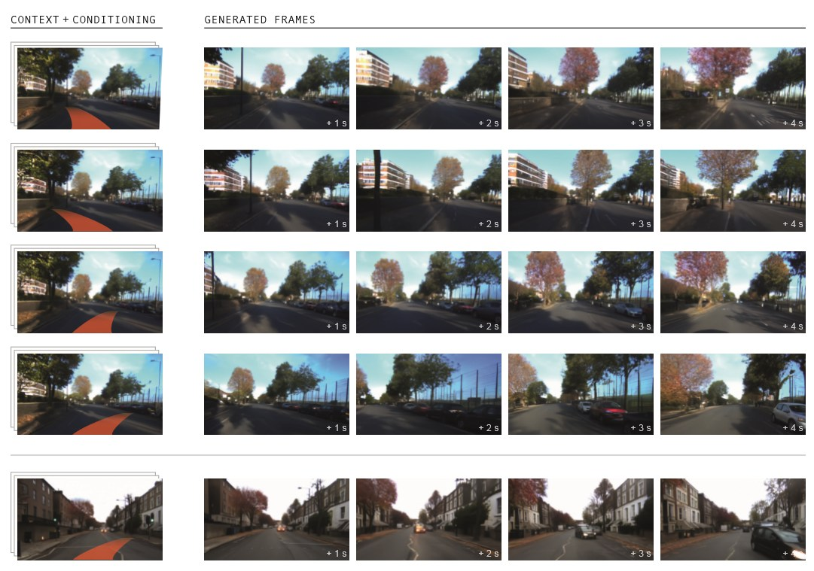
図13：世界モデルは、自らの行動を条件として異なる結果を予測できる。最初の 4 行では、与えられたコンテキスト動画から、分布外のさまざまな行動（速度を維持したまま、左、強い左、右、強い右）を実行する。世界モデルは、対応する状態を正確な幾何で予測できる。最後の行では、速度を維持したまま自車両に右へ操舵させ、その結果として、対向車が反応して衝突を回避する操作を行うことが観察される。
図中ラベル：CONTEXT + CONDITIONING＝コンテキスト＋条件付け、GENERATED FRAMES＝生成フレーム
8 関連研究
動画生成モデル。動画生成モデルは、写実的な動画サンプルを生成できるニューラルネットワークである。これらは 4 つのカテゴリに分類できる：VAE ベース（変分オートエンコーダ［50］）、GAN ベース（敵対的生成ネットワーク［51］）、拡散ベース［52］、自己回帰ベース［53］。
潜在変数動画モデル（VAE ベース）は、動画を生成した根底の潜在過程を推論しようとする［54, 55, 56, 57, 58］。これらのモデルの既知の限界の 1 つは、表現力の限界、事前分布の不適切な選択、そして真の尤度ではなく下界を最適化することに起因して、ぼやけた出力を生成しがちなことである。GAN ベースの手法はより写実的な動画を生成する［59, 60, 61, 62, 63, 64］が、学習の不安定さと生成の多様性の欠如に悩まされることが知られている［65］。拡散ベースの手法は、写実性、制御性、時間的一貫性において大きな向上をもたらしてきた。これらはピクセルレベル［38, 17, 66, 67, 68, 69, 16］でも、事前学習済み画像トークナイザの潜在空間［70, 18, 71］でも動作できる。拡散モデルは複雑なデータ分布に適合できる表現力の高いニューラルネットワークであるが、サンプルを生成するために拡散ステップの長いマルコフ連鎖に依存する。最後に、自己回帰ベースの手法は概念的に単純であり、扱いやすい厳密な尤度の最適化（データ分布全体に適合する）に依拠する。同様に、これらはピクセルレベル［72, 73］でも、学習された離散トークン空間［74, 75, 76, 77］でも動作できる。既知の限界は生成速度の遅さであるが、この問題は、並列サンプリング［78, 79, 80］、潜在変数の数の削減［81］に関する今後の研究や、ハードウェアアクセラレータの改良によって緩和されうる。
世界モデル。世界モデルとは、自らの行動の帰結を理解するために世界の汎用的な表現を学習する、将来の予測モデルである［7, 8］。主なユースケースは、純粋な表現学習、計画（先読み探索）、または世界モデル（ニューラルシミュレータ）内での方策の学習である。
世界モデリングは、コンパクトで汎用的な表現を自己教師ありで学習するための事前学習タスクとして用いられてきた［82, 83］。続いて、この表現を従来の強化学習（RL）アルゴリズムの状態として用いることで、収束速度が大幅に加速された。世界モデルは、将来の行動の結果を想像して計画するための先読み探索にも利用できる。これはゲーム環境やボードゲームで非常に有効であることが証明されている［9, 84］。さらに、世界モデルは環境のシミュレータとして機能することで RL アルゴリズムのサンプル効率の問題に対する解決策となりうる［7, 85, 86, 62, 13, 15, 87］。ただしこれは、世界モデルが環境の正確なモデルであることを前提としている。
近年の一連の研究は、状態・行動・報酬を単なるデータの流れとして扱い、世界モデリングを単一の系列モデルとして定式化することを提案している［10, 19, 14, 88, 12, 89］。このような見方の利点は、大規模な教師なし学習に適用された高容量の系列モデルアーキテクチャのスケーリング特性から、世界モデルが恩恵を受けられることである［26］。これは GAIA-1 が採用する手法であり、そうしたスケーリング特性を活用して、実世界の運転シーンのような複雑な環境をモデル化する。
スケーリング。大規模言語モデルは、モデルサイズとデータのスケーリングにおいて明確な利点を示してきた［90, 24, 26, 20, 21, 22, 23］。特に［49］は、モデル／データのサイズと損失との間に、複数の桁にわたって予測可能な関係があることを示した。［49］は、計算予算をモデルとデータのサイズの間で最適に配分するために、トランスフォーマベースの言語モデルのべき乗則を導出した。これらの法則はその後、データセットのサイズを変える際に学習率スケジュールを適応させることで［27］によって精緻化された。言語モデルの学習効率を改善するためのもう 1 つの研究の方向性はデータの品質である。［91］は、学習データの品質が下流タスクにおける言語モデルの性能に決定的な役割を果たすことを示した。
大規模言語モデルのスケーリング原理を視覚領域へ移転することは、一貫した、予期どおりの性能向上をもたらす可能性を秘めている［92, 93, 43, 16, 94］。本研究では、世界モデリングの問題を教師なし系列モデリングとして定式化することで、言語モデルと同様のスケーリングの傾向が世界モデルにも当てはまることを示した。
9 結論と今後の課題
GAIA-1 は自動運転のための生成的世界モデルである。この世界モデルはベクトル量子化表現を用いて、将来予測のタスクを次トークン予測タスクに変換する。これは大規模言語モデルでうまく用いられてきた技術である。GAIA-1 は、自動車、トラック、バス、歩行者、自転車利用者、道路レイアウト、建物、信号機といったさまざまな概念を区別し、環境の包括的な理解を獲得する能力を示した。しかもそのすべてを自己教師ありで行っている。さらに GAIA-1 は、動画拡散モデルの能力を活用して写実的な運転シナリオを生成し、それによって高度なニューラルシミュレータとして機能する。GAIA-1 はマルチモーダルな手法であり、テキストによる指示と行動に基づく指示の組み合わせを通じて、自車両の行動やその他のシーン属性の制御を可能にする。
我々の手法は自動運転の限界を押し広げる可能性のある有望な結果を示したが、現在の限界を認識することは重要である。例えば、自己回帰的な生成過程は、非常に効果的ではあるものの、まだリアルタイムでは動作しない。それでも、この過程は並列化に適しており、複数のサンプルを同時に生成できることは注目に値する。
GAIA-1 の意義は、その生成能力にとどまらない。世界モデルは、実世界の複雑さを理解し、予測し、それに適応できる自律システムの実現に向けた重要な一歩である。さらに、世界モデルを運転モデルに組み込むことで、運転モデルが自らの意思決定をよりよく理解し、最終的にはより多くの実世界の状況へと汎化できるようになる。最後に、GAIA-1 は価値あるニューラルシミュレータとしても機能でき、自動運転システムの学習と検証のために、敵対的な事例を含む無制限のデータを生成することを可能にする。
謝辞
本研究は、Wayve 全体にわたる多くのチームと人々の専門知識と惜しみない協力によって実現した。特に次の方々に感謝する：Giulio D’Ippolito、Dan Reisman、Alex Persin、Przemyslaw Mazur、Oleg Sinavski、Long Chen、Fergal Cotter、Corina Gurau、Shu Ishida、Remi Tachet、Rudi Rankin、Tilly Pielichaty、Rod Bauer、Charlie Lyons-Rothbart、Harriett-Rose Follas、Robert Weston、Becky Goldman、Sasha Harrison、Saurabh Nair、Prajwal Chidananda、Tom Newton、Benoit Hanotte、Ana-Maria Marcu、Thomas Sajot、Giacomo Gallino、Alex Garcia Mayans、Tim Geypens、Robin Tweedie、Rebecca Hills、Tim Williams-Silvera、Darren Jenner、Matt Wood、Dave Chilvers、Danny Ly、Joseph Rodrigo、Will Dias、Naomi Standard、Theepa Balasubramaniam。
参考文献
参考文献は原文のまま掲載した。
- A. Kendall, J. Hawke, D. Janz, P. Mazur, D. Reda, J.-M. Allen, V.-D. Lam, A. Bewley, and A. Shah. Learning to drive in a day. In Proceedings of the International Conference on Robotics and Automation (ICRA), 2019.
- H. Caesar, V. Bankiti, A. H. Lang, S. Vora, V. E. Liong, Q. Xu, A. Krishnan, Y. Pan, G. Baldan, and O. Beijbom. nuScenes: A multimodal dataset for autonomous driving. Proceedings of the IEEE Conference on Computer Vision and Pattern Recognition (CVPR), 2020.
- A. Hu, F. Cotter, N. Mohan, C. Gurau, and A. Kendall. Probabilistic Future Prediction for Video Scene Understanding. In Proceedings of the European Conference on Computer Vision (ECCV), 2020.
- S. Ettinger, S. Cheng, B. Caine, C. Liu, H. Zhao, S. Pradhan, Y. Chai, B. Sapp, C. Qi, Y. Zhou, Z. Yang, A. Chouard, P. Sun, J. Ngiam, V. Vasudevan, A. McCauley, J. Shlens, and D. Anguelov. Large Scale Interactive Motion Forecasting for Autonomous Driving : The Waymo Open Motion Dataset. In Proceedings of the IEEE International Conference on Computer Vision (ICCV), 2021.
- A. Hu, Z. Murez, N. Mohan, S. Dudas, J. Hawke, V. Badrinarayanan, R. Cipolla, and A. Kendall. FIERY: Future Instance Prediction in Bird's-Eye View From Surround Monocular Cameras. In Proceedings of the IEEE International Conference on Computer Vision (ICCV), pages 15273–15282, 2021.
- Y. Hu, J. Yang, L. Chen, K. Li, C. Sima, X. Zhu, S. Chai, S. Du, T. Lin, W. Wang, L. Lu, X. Jia, Q. Liu, J. Dai, Y. Qiao, and H. Li. Planning-oriented autonomous driving. In Proceedings of the IEEE Conference on Computer Vision and Pattern Recognition (CVPR), 2023.
- D. Ha and J. Schmidhuber. Recurrent world models facilitate policy evolution. In Advances in Neural Information Processing Systems (NeurIPS), 2018.
- Y. LeCun. A Path Towards Autonomous Machine Intelligence. In arXiv preprint, 2022.
- J. Schrittwieser, I. Antonoglou, T. Hubert, K. Simonyan, L. Sifre, S. Schmitt, A. Guez, E. Lockhart, D. Hassabis, T. Graepel, T. Lillicrap, and D. Silver. Mastering Atari, Go, Chess and Shogi by Planning with a Learned Model. In Nature, 2020.
- M. Janner, Q. Li, and S. Levine. Offline reinforcement learning as one big sequence modeling problem. In Advances in Neural Information Processing Systems (NeurIPS), 2021.
- A. Hu, G. Corrado, N. Griffiths, Z. Murez, C. Gurau, H. Yeo, A. Kendall, R. Cipolla, and J. Shotton. Model-Based Imitation Learning for Urban Driving. In Advances in Neural Information Processing Systems (NeurIPS), 2022.
- V. Micheli, E. Alonso, and F. Fleuret. Transformers are sample-efficient world models. In Proceedings of the International Conference on Learning Representations (ICLR), 2023.
- D. Hafner, J. Pasukonis, J. Ba, and T. Lillicrap. Mastering diverse domains through world models. In arXiv preprint, 2023.
- S. Reed, K. Zolna, E. Parisotto, S. Gómez, A. Novikov, G. Barth-Maron, M. Gimenez, Y. Sulsky, J. Kay, J. Springenberg, T. Eccles, J. Bruce, A. Razavi, A. Edwards, N. Heess, Y. Chen, R. Hadsell, O. Vinyals, M. Bordbar, and N. Freitas. A generalist agent. In Transactions on Machine Learning Research (TMLR), 2022.
- P. Wu, A. Escontrela, D. Hafner, P. Abbeel, and K. Goldberg. Daydreamer: World models for physical robot learning. In Proceedings of the Conference on Robot Learning (CoRL), 2023.
- J. Ho, W. Chan, C. Saharia, J. Whang, R. Gao, A. Gritsenko, D. P. Kingma, B. Poole, M. Norouzi, D. J. Fleet, and T. Salimans. Imagen video: High definition video generation with diffusion models. In arXiv preprint, 2022.
- W. Harvey, S. Naderiparizi, V. Masrani, C. Weilbach, and F. Wood. Flexible diffusion modeling of long videos. In Advances in Neural Information Processing Systems (NeurIPS), 2022.
- P. Esser, J. Chiu, P. Atighehchian, J. Granskog, and A. Germanidis. Structure and content-guided video synthesis with diffusion models. In arXiv preprint, 2023.
- L. Chen, K. Lu, A. Rajeswaran, K. Lee, A. Grover, M. Laskin, P. Abbeel, A. Srinivas, and I. Mordatch. Decision transformer: Reinforcement learning via sequence modeling. In Advances in Neural Information Processing Systems (NeurIPS), 2021.
- S. Smith, M. M. A. Patwary, B. Norick, P. Legresley, S. Rajbhandari, J. Casper, Z. Liu, S. Prabhumoye, G. Zerveas, V. Korthikanti, E. Zhang, R. Child, R. Aminabadi, J. Bernauer, X. Song, M. Shoeybi, Y. He, M. Houston, S. Tiwary, and B. Catanzaro. Using DeepSpeed and Megatron to Train Megatron-Turing NLG 530B, A Large-Scale Generative Language Model. In arXiv preprint, 2022.
- A. Chowdhery, S. Narang, J. Devlin, M. Bosma, G. Mishra, A. Roberts, P. Barham, H. W. Chung, C. Sutton, S. Gehrmann, P. Schuh, K. Shi, S. Tsvyashchenko, J. Maynez, A. Rao, P. Barnes, Y. Tay, N. M. Shazeer, V. Prabhakaran, E. Reif, N. Du, B. C. Hutchinson, R. Pope, J. Bradbury, J. Austin, M. Isard, G. Gur-Ari, P. Yin, T. Duke, A. Levskaya, S. Ghemawat, S. Dev, H. Michalewski, X. García, V. Misra, K. Robinson, L. Fedus, D. Zhou, D. Ippolito, D. Luan, H. Lim, B. Zoph, A. Spiridonov, R. Sepassi, D. Dohan, S. Agrawal, M. Omernick, A. M. Dai, T. S. Pillai, M. Pellat, A. Lewkowycz, E. Moreira, R. Child, O. Polozov, K. Lee, Z. Zhou, X. Wang, B. Saeta, M. Díaz, O. Firat, M. Catasta, J. Wei, K. S. Meier-Hellstern, D. Eck, J. Dean, S. Petrov, and N. Fiedel. PaLM: Scaling language modeling with pathways. arXiv preprint, 2022.
- H. Touvron, T. Lavril, G. Izacard, X. Martinet, M.-A. Lachaux, T. Lacroix, B. Rozière, N. Goyal, E. Hambro, F. Azhar, A. Rodriguez, A. Joulin, E. Grave, and G. Lample. Llama: Open and efficient foundation language models. In arXiv preprint, 2023.
- OpenAI. GPT-4 Technical Report. In arXiv preprint, 2023.
- C. Raffel, N. Shazeer, A. Roberts, K. Lee, S. Narang, M. Matena, Y. Zhou, W. Li, and P. J. Liu. Exploring the limits of transfer learning with a unified text-to-text transformer. Journal of Machine Learning Research, 2020.
- Y. Liu, M. Ott, N. Goyal, J. Du, M. Joshi, D. Chen, O. Levy, M. Lewis, L. Zettlemoyer, and V. Stoyanov. Roberta: A robustly optimized bert pretraining approach. arXiv preprint, 2019.
- T. Brown, B. Mann, N. Ryder, M. Subbiah, J. D. Kaplan, P. Dhariwal, A. Neelakantan, P. Shyam, G. Sastry, A. Askell, S. Agarwal, A. Herbert-Voss, G. Krueger, T. Henighan, R. Child, A. Ramesh, D. Ziegler, J. Wu, C. Winter, C. Hesse, M. Chen, E. Sigler, M. Litwin, S. Gray, B. Chess, J. Clark, C. Berner, S. McCandlish, A. Radford, I. Sutskever, and D. Amodei. Language Models are Few-Shot Learners. In Advances in Neural Information Processing Systems (NeurIPS), 2020.
- J. Hoffmann, S. Borgeaud, A. Mensch, E. Buchatskaya, T. Cai, E. Rutherford, D. de las Casas, L. A. Hendricks, J. Welbl, A. Clark, T. Hennigan, E. Noland, K. Millican, G. van den Driessche, B. Damoc, A. Guy, S. Osindero, K. Simonyan, E. Elsen, O. Vinyals, J. W. Rae, and L. Sifre. An empirical analysis of compute-optimal large language model training. In Advances in Neural Information Processing Systems (NeurIPS), 2022.
- A. van den Oord, O. Vinyals, and K. Kavukcuoglu. Neural discrete representation learning. In Advances in Neural Information Processing Systems (NeurIPS), 2017.
- Z. Peng, L. Dong, H. Bao, Q. Ye, and F. Wei. BEiT v2: Masked Image Modeling with Vector-Quantized Visual Tokenizers. arXiv preprint, 2022.
- M. Caron, H. Touvron, I. Misra, H. Jégou, J. Mairal, P. Bojanowski, and A. Joulin. Emerging properties in self-supervised vision transformers. In Proceedings of the IEEE International Conference on Computer Vision (ICCV), 2021.
- O. Ronneberger, P. Fischer, and T. Brox. U-Net: Convolutional Networks for Biomedical Image Segmentation. In Medical Image Computing and Computer-Assisted Intervention (MICCAI), 2015.
- J. Johnson, A. Alahi, and L. Fei-Fei. Perceptual losses for real-time style transfer and super-resolution. In Proceedings of the European Conference on Computer Vision (ECCV), 2016.
- P. Esser, R. Rombach, and B. Ommer. Taming transformers for high-resolution image synthesis. In Proceedings of the IEEE Conference on Computer Vision and Pattern Recognition (CVPR), 2021.
- J. Yu, X. Li, J. Y. Koh, H. Zhang, R. Pang, J. Qin, A. Ku, Y. Xu, J. Baldridge, and Y. Wu. Vector-quantized image modeling with improved VQGAN. In Proceedings of the International Conference on Learning Representations (ICLR), 2022.
- A. Vaswani, N. Shazeer, N. Parmar, J. Uszkoreit, L. Jones, A. Gomez, L. Kaiser, and I. Polosukhin. Attention is all you need. In Advances in Neural Information Processing Systems (NeurIPS), 2017.
- R. Rombach, A. Blattmann, D. Lorenz, P. Esser, and B. Ommer. High-resolution image synthesis with latent diffusion models. In Proceedings of the IEEE Conference on Computer Vision and Pattern Recognition (CVPR), 2022.
- C. Saharia, W. Chan, S. Saxena, L. Li, J. Whang, E. Denton, S. K. S. Ghasemipour, B. K. Ayan, S. S. Mahdavi, R. G. Lopes, T. Salimans, J. Ho, D. J. Fleet, and M. Norouzi. Photorealistic text-to-image diffusion models with deep language understanding. In Advances in Neural Information Processing Systems (NeurIPS), 2022.
- J. Ho, T. Salimans, A. Gritsenko, W. Chan, M. Norouzi, and D. J. Fleet. Video diffusion models. In arXiv preprint, 2022.
- J. H. Tim Salimans. Progressive distillation for fast sampling of diffusion models. In Proceedings of the International Conference on Learning Representations (ICLR), 2022.
- I. Loshchilov and F. Hutter. Decoupled Weight Decay Regularization. In Proceedings of the International Conference on Learning Representations (ICLR), 2019.
- T. Dao, D. Y. Fu, S. Ermon, A. Rudra, and C. Ré. FlashAttention: Fast and memory-efficient exact attention with IO-awareness. In Advances in Neural Information Processing Systems (NeurIPS), 2022.
- J. Rasley, S. Rajbhandari, O. Ruwase, and Y. He. DeepSpeed: System Optimizations Enable Training Deep Learning Models with Over 100 Billion Parameters. In Proceedings of the 26th ACM SIGKDD International Conference on Knowledge Discovery & Data Mining, 2020.
- E. Hoogeboom, J. Heek, and T. Salimans. simple diffusion: End-to-end diffusion for high resolution images. In Proceedings of the International Conference on Machine Learning (ICML), 2023.
- A. Holtzman, J. Buys, L. Du, M. Forbes, and Y. Choi. The curious case of neural text degeneration. In Proceedings of the International Conference on Learning Representations (ICLR), 2020.
- J. Ho and T. Salimans. Classifier-free diffusion guidance. arXiv preprint, 2022.
- H. Chang, H. Zhang, J. Barber, A. Maschinot, J. Lezama, L. Jiang, M.-H. Yang, K. Murphy, W. T. Freeman, M. Rubinstein, et al. Muse: Text-to-image generation via masked generative transformers. arXiv preprint, 2023.
- Negative prompt. https://github.com/AUTOMATIC1111/stable-diffusion-webui/wiki/Negative-prompt, 2022.
- J. Song, C. Meng, and S. Ermon. Denoising diffusion implicit models. Proceedings of the International Conference on Learning Representations (ICLR), 2021.
- J. Kaplan, S. McCandlish, T. Henighan, T. B. Brown, B. Chess, R. Child, S. Gray, A. Radford, J. Wu, and D. Amodei. Scaling laws for neural language models. In arXiv preprint, 2020.
- D. P. Kingma and M. Welling. Auto-encoding variational bayes. Proceedings of the International Conference on Learning Representations (ICLR), 2014.
- I. Goodfellow, J. Pouget-Abadie, M. Mirza, B. Xu, D. Warde-Farley, S. Ozair, A. Courville, and Y. Bengio. Generative adversarial nets. In Advances in Neural Information Processing Systems (NeurIPS), 2014.
- J. Sohl-Dickstein, E. Weiss, N. Maheswaranathan, and S. Ganguli. Deep unsupervised learning using nonequilibrium thermodynamics. In Proceedings of the International Conference on Machine Learning (ICML), 2015.
- A. van den Oord, N. Kalchbrenner, L. Espeholt, k. kavukcuoglu, O. Vinyals, and A. Graves. Conditional image generation with pixelcnn decoders. In Advances in Neural Information Processing Systems (NeurIPS), 2016.
- M. Babaeizadeh, C. Finn, D. Erhan, R. H. Campbell, and S. Levine. Stochastic variational video prediction. In Proceedings of the International Conference on Learning Representations (ICLR), 2018.
- E. Denton and R. Fergus. Stochastic Video Generation with a Learned Prior. In Proceedings of the International Conference on Machine Learning (ICML), 2018.
- R. Villegas, A. Pathak, H. Kannan, D. Erhan, Q. Le, and H. Lee. High fidelity video prediction with large stochastic recurrent neural networks. In Advances in Neural Information Processing Systems (NeurIPS), 2019.
- J.-Y. Franceschi, E. Delasalles, M. Chen, S. Lamprier, and P. Gallinari. Stochastic latent residual video prediction. In Proceedings of the International Conference on Machine Learning (ICML), 2020.
- M. Babaeizadeh, M. Saffar, S. Nair, S. Levine, C. Finn, and D. Erhan. Fitvid: Overfitting in pixel-level video prediction. In arXiv preprint, 2021.
- C. Vondrick, H. Pirsiavash, and A. Torralba. Generating videos with scene dynamics. In Advances in Neural Information Processing Systems (NeurIPS), 2016.
- S. Tulyakov, M.-Y. Liu, X. Yang, and J. Kautz. MoCoGAN: Decomposing motion and content for video generation. In Proceedings of the IEEE Conference on Computer Vision and Pattern Recognition (CVPR), 2018.
- A. Clark, J. Donahue, and K. Simonyan. Adversarial Video Generation on Complex Datasets. In arXiv preprint, 2019.
- S. W. Kim, J. Philion, A. Torralba, and S. Fidler. DriveGAN: Towards a controllable high-quality neural simulation. In Proceedings of the IEEE Conference on Computer Vision and Pattern Recognition (CVPR), 2021.
- I. Skorokhodov, S. Tulyakov, and M. Elhoseiny. StyleGAN-V: A continuous video generator with the price, image quality and perks of StyleGAN2. In Proceedings of the IEEE Conference on Computer Vision and Pattern Recognition (CVPR), 2022.
- T. Brooks, J. Hellsten, M. Aittala, T.-C. Wang, T. Aila, J. Lehtinen, M.-Y. Liu, A. Efros, and T. Karras. Generating long videos of dynamic scenes. In Advances in Neural Information Processing Systems (NeurIPS), 2022.
- I. Goodfellow. NIPS 2016 Tutorial: Generative Adversarial Networks. In arXiv preprint, 2016.
- V. Voleti, A. Jolicoeur-Martineau, and C. Pal. MCVD: Masked conditional video diffusion for prediction, generation, and interpolation. In Advances in Neural Information Processing Systems (NeurIPS), 2022.
- T. Höppe, A. Mehrjou, S. Bauer, D. Nielsen, and A. Dittadi. Diffusion models for video prediction and infilling. In Transactions on Machine Learning Research (TMLR), 2022.
- U. Singer, A. Polyak, T. Hayes, X. Yin, J. An, S. Zhang, Q. Hu, H. Yang, O. Ashual, O. Gafni, D. Parikh, S. Gupta, and Y. Taigman. Make-A-Video: Text-to-video generation without text-video data. In arXiv preprint, 2022.
- E. Molad, E. Horwitz, D. Valevski, A. R. Acha, Y. Matias, Y. Pritch, Y. Leviathan, and Y. Hoshen. Dreamix: Video diffusion models are general video editors. arXiv preprint, 2023.
- D. Zhou, W. Wang, H. Yan, W. Lv, Y. Zhu, and J. Feng. Magicvideo: Efficient video generation with latent diffusion models. arXiv preprint, 2022.
- A. Blattmann, R. Rombach, H. Ling, T. Dockhorn, S. W. Kim, S. Fidler, and K. Kreis. Align your latents: High-resolution video synthesis with latent diffusion models. In Proceedings of the IEEE Conference on Computer Vision and Pattern Recognition (CVPR), 2023.
- N. Kalchbrenner, A. van den Oord, K. Simonyan, I. Danihelka, O. Vinyals, A. Graves, and K. Kavukcuoglu. Video Pixel Networks. In Proceedings of the International Conference on Machine Learning (ICML), 2017.
- D. Weissenborn, O. Täckström, and J. Uszkoreit. Scaling autoregressive video models. Proceedings of the International Conference on Learning Representations (ICLR), 2020.
- W. Yan, Y. Zhang, P. Abbeel, and A. Srinivas. VideoGPT: Video generation using vq-vae and transformers. In arXiv preprint, 2021.
- G. L. Moing, J. Ponce, and C. Schmid. CCVS: Context-aware controllable video synthesis. In Advances in Neural Information Processing Systems (NeurIPS), 2021.
- S. Ge, T. Hayes, H. Yang, X. Yin, G. Pang, D. Jacobs, J.-B. Huang, and D. Parikh. Long video generation with time-agnostic vqgan and time-sensitive transformer. Proceedings of the European Conference on Computer Vision (ECCV), 2022.
- Y. Seo, K. Lee, F. Liu, S. James, and P. Abbeel. HARP: Autoregressive latent video prediction with high-fidelity image generator. In Proceedings of the IEEE International Conference on Image Processing (ICIP), 2022.
- W. Yan, D. Hafner, S. James, and P. Abbeel. Temporally consistent transformers for video generation. In Proceedings of the International Conference on Machine Learning (ICML), 2023.
- R. Villegas, M. Babaeizadeh, P.-J. Kindermans, H. Moraldo, H. Zhang, M. T. Saffar, S. Castro, J. Kunze, and D. Erhan. Phenaki: Variable length video generation from open domain textual description. In Proceedings of the International Conference on Learning Representations (ICLR), 2023.
- L. Yu, Y. Cheng, K. Sohn, J. Lezama, H. Zhang, H. Chang, A. G. Hauptmann, M.-H. Yang, Y. Hao, I. Essa, and L. Jiang. MAGVIT: Masked Generative Video Transformer. In Proceedings of the IEEE Conference on Computer Vision and Pattern Recognition (CVPR), 2023.
- C. Hawthorne, A. Jaegle, C. Cangea, S. Borgeaud, C. Nash, M. Malinowski, S. Dieleman, O. Vinyals, M. Botvinick, I. Simon, H. Sheahan, N. Zeghidour, J.-B. Alayrac, J. Carreira, and J. Engel. General-purpose, long-context autoregressive modeling with Perceiver AR. In Proceedings of the International Conference on Machine Learning (ICML), 2022.
- M. Schwarzer, A. Anand, R. Goel, R. D. Hjelm, A. C. Courville, and P. Bachman. Data-efficient reinforcement learning with self-predictive representations. In Proceedings of the International Conference on Learning Representations (ICLR), 2020.
- P. Wu, A. Majumdar, K. Stone, Y. Lin, I. Mordatch, P. Abbeel, and A. Rajeswaran. Masked trajectory models for prediction, representation, and control. In Proceedings of the International Conference on Machine Learning (ICML), 2023.
- W. Ye, S. Liu, T. Kurutach, P. Abbeel, and Y. Gao. Mastering atari games with limited data. In Advances in Neural Information Processing Systems (NeurIPS), 2021.
- L. Kaiser, M. Babaeizadeh, P. Milos, B. Osinski, R. Campbell, K. Czechowski, D. Erhan, C. Finn, P. Kozakowski, S. Levine, A. Mohiuddin, R. Sepassi, G. Tucker, and H. Michalewski. Model-based reinforcement learning for atari. In Proceedings of the International Conference on Learning Representations (ICLR), 2020.
- D. Hafner, T. Lillicrap, M. Norouzi, and J. Ba. Mastering atari with discrete world models. Proceedings of the International Conference on Learning Representations (ICLR), 2021.
- X. Wang, Z. Zhu, G. Huang, X. Chen, and J. Lu. DriveDreamer: Towards Real-world-driven World Models for Autonomous Driving. arXiv preprint, 2023.
- F. Liu, H. Liu, A. Grover, and P. Abbeel. Masked autoencoding for scalable and generalizable decision making. Advances in Neural Information Processing Systems (NeurIPS), 2022.
- commaVQ. https://github.com/commaai/commavq, 2023.
- J. Devlin, M.-W. Chang, K. Lee, and K. Toutanova. BERT: Pre-training of Deep Bidirectional Transformers for Language Understanding. North American Chapter of the Association for Computational Linguistics (NAACL), 2019.
- N. Du, Y. Huang, A. M. Dai, S. Tong, D. Lepikhin, Y. Xu, M. Krikun, Y. Zhou, A. W. Yu, O. Firat, B. Zoph, L. Fedus, M. Bosma, Z. Zhou, T. Wang, Y. E. Wang, K. Webster, M. Pellat, K. Robinson, K. S. Meier-Hellstern, T. Duke, L. Dixon, K. Zhang, Q. V. Le, Y. Wu, Z. Chen, and C. Cui. GLaM: Efficient scaling of language models with mixture-of-experts. In Proceedings of the International Conference on Machine Learning (ICML), 2022.
- Y. Tay, M. Dehghani, J. Rao, W. Fedus, S. Abnar, H. W. Chung, S. Narang, D. Yogatama, A. Vaswani, and D. Metzler. Scale efficiently: Insights from pre-training and fine-tuning transformers. In Proceedings of the International Conference on Learning Representations (ICLR), 2022.
- M. Dehghani, J. Djolonga, B. Mustafa, P. Padlewski, J. Heek, J. Gilmer, A. Steiner, M. Caron, R. Geirhos, I. Alabdulmohsin, R. Jenatton, L. Beyer, M. Tschannen, A. Arnab, X. Wang, C. Riquelme, M. Minderer, J. Puigcerver, U. Evci, M. Kumar, S. van Steenkiste, G. F. Elsayed, A. Mahendran, F. Yu, A. Oliver, F. Huot, J. Bastings, M. P. Collier, A. Gritsenko, V. Birodkar, C. Vasconcelos, Y. Tay, T. Mensink, A. Kolesnikov, F. Pavetić, D. Tran, T. Kipf, M. Lučić, X. Zhai, D. Keysers, J. Harmsen, and N. Houlsby. Scaling vision transformers to 22 billion parameters. In Proceedings of the International Conference on Machine Learning (ICML), 2023.
- W. Peebles and S. Xie. Scalable diffusion models with transformers. In arXiv preprint, 2023.